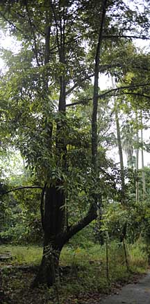
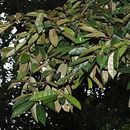
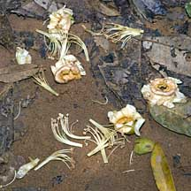
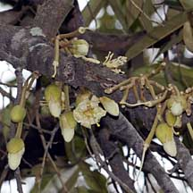
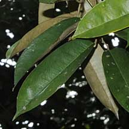
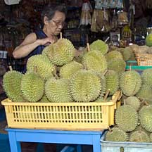
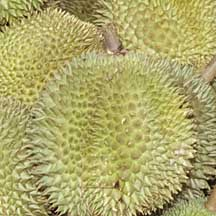
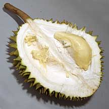

|
|
| plants text index | photo index |
| coastal plants |
| Durian Durio zibethinus Family Bombacaceae updated Oct 2016 Where seen? The target of many obssessed Singaporeans, Durian trees can still be found growing wild in many parts of Singapore. They often mark the locations of 'kampongs' or villages that have long since been cleared. Pulau Ubin has lots of durian trees. The durian is native of Southeast Asia, with 28 species, mostly in Borneo. There are 13 species in Malaya found in lowland forest. The scientific name comes from the Italian 'zibetto' or civet cat which also has a noxious smell. Features: Tall tree with sparse, long branches. Leaves narrow and pointed, silvery or coppery scales on the underside, arranged alternately. Flowers pom-pom shaped with a lot of stamens and 4-5 pale petals. The flowers open in the afternoon and are pollinated by bees, flies and beetles, and at night by bats. They fall off after midnight. The fruit is large, covered densely with sharp hard thorns. It is a capsule with 4-5 compartments filled with large seeds covered with a thin flesh which is relished as a delicacy. According to Corners, fallen fruits in the wild first attract elephants followed by tiger, deer, pig, rhinoceros, tapir and monkey. He says there are stories of natives gathering durians who were 'gathered in turn by an elephant'. Mangrove connection: According to Tomlinson, a study in west Malaysia found that Durian flowers are pollinated almost entirely by a single species of bat Eonycterus spelaea. This bat roosts primarily in limestone caves and are fast flyers that range up to 50km each night in search of pollen and nectar from a wide variety of plants. Their range include mangroves and the mangrove Sonneratia species especially S. alba are important sources of food for these bats. Human uses: The durian fruit evokes extreme reactions. People either love it or hate it, few are indifferent to it. Burkill declares 'many writers have attempted to describe the taste, and differ in their description, perhaps much more widely than the taste itself.' |
 Pulau Ubin, Oct 09  Pulau Ubin, Oct 09 |
|
 Fallen flowers. Chek Jawa, Apr 08 |
 Flowers on a thick branch. Pulau Ubin, Apr 10 |
 |
|
 Pulau Ubin, Oct 03 |
 Pulau Ubin, Oct 03 |
 Pulau Ubin, Oct 03 |
| Durians in Singapore |
| Photos of Durians for free download from wildsingapore flickr |
| Distribution in Singapore on this wildsingapore flickr map |
|
Links
References
|
|
|